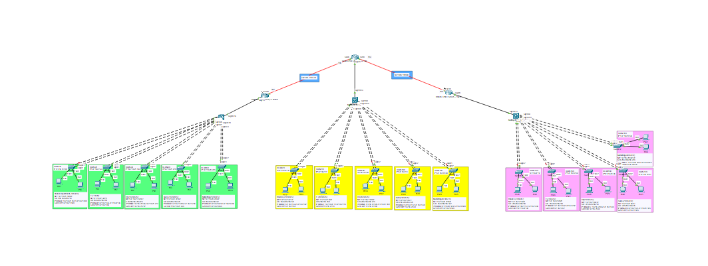

Shared service
Check that the employee can reach the service over the office network.
ENGINEERING PORTFOLIO / PROJECT 01
A simulated network that connects offices and keeps department access organized.

PROJECT OVERVIEW
The problem: employees in different offices need to share services, while departments such as Finance need restricted access.
What I did: built and tested a simulated company network, organized department connections, assigned device addresses, and configured the paths and access rules between offices.
Why it matters: staff can reach the services they need, sensitive departments have defined boundaries, and the network is easier to manage and troubleshoot.
IN PRACTICE
Each device needs an address, the network needs a route, and restricted destinations need an access rule.
The network identifies the employee’s device and directs the request toward the New York office.
Check that the employee can reach the service over the office network.
Check whether the department’s access rule blocks the request.
Illustrative business request. The original ACL is a blanket deny, as explained in the technical review.
SKILLS I DEVELOPED
Turning office and department needs into a topology, subnet sizes, and an address plan using VLSM.
Configuring VLANs, inter-VLAN routing, OSPF, and DHCP so the simulated offices can communicate.
Applying ACL restrictions and combining switch links with EtherChannel.
Checking routes, address allocation, connection status, and policy behavior, then recording the evidence.
01 / NETWORK TOPOLOGY
New York serves as the head office, with WAN connections to London and Tokyo. Each office separates Finance, IT, HR, Sales, and Marketing into departmental VLANs.
Simplified architecture redrawn from the project documentation.

02 / ADDRESSING PLAN
The VLSM plan uses /26, /27, and /28 department subnets according to host demand. WAN links use /30 networks. The tables below reproduce departmental allocations from the document and gateway addresses from the router configurations.
| Department | VLAN | Hosts needed | Subnet | Gateway | Usable addresses |
|---|---|---|---|---|---|
| Finance | 70 | 20 | 172.16.21.32/27 | 172.16.21.62 | 30 |
| IT | 80 | 10 | 172.16.22.0/28 | 172.16.22.14 | 14 |
| HR | 90 | 15 | 172.16.21.128/27 | 172.16.21.158 | 30 |
| Sales | 100 | 24 | 172.16.21.0/27 | 172.16.21.30 | 30 |
| Marketing | 110 | 40 | 172.16.20.128/26 | 172.16.20.190 | 62 |
| Department | VLAN | Hosts needed | Subnet | Gateway | Usable addresses |
|---|---|---|---|---|---|
| Finance | 10 | 15 | 172.16.21.160/27 | 172.16.21.190 | 30 |
| IT | 20 | 7 | 172.16.22.32/28 | 172.16.22.46 | 14 |
| HR | 30 | 15 | 172.16.21.192/27 | 172.16.21.222 | 30 |
| Sales | 40 | 15 | 172.16.21.224/27 | 172.16.21.254 | 30 |
| Marketing | 50 | 25 | 172.16.20.224/27 | 172.16.20.254 | 30 |
| Department | VLAN | Hosts needed | Subnet | Gateway | Usable addresses |
|---|---|---|---|---|---|
| Finance | 140 | 10 | 172.16.22.16/28 | 172.16.22.30 | 14 |
| IT | 150 | 7 | 172.16.22.48/28 | 172.16.22.62 | 14 |
| HR | 160 | 20 | 172.16.21.64/27 | 172.16.21.94 | 30 |
| Sales | 170 | 20 | 172.16.21.96/27 | 172.16.21.126 | 30 |
| Marketing | 180 | 30 | 172.16.20.192/27 | 172.16.20.222 | 30 |
03 / CONFIGURATION HIGHLIGHTS
Department VLANs are carried on trunks. The supplied router configurations use 802.1Q subinterfaces as gateways; multilayer switch SVI addresses are also documented.
Router configurations use OSPF process 100 and area 0 to advertise departmental subnets and inter-office WAN links.
Separate pools define each VLAN network and default gateway, with exclusions for router gateway addresses.
Switch configurations bundle paired trunk interfaces using active LACP channel groups and Port-channel interfaces.
ip dhcp excluded-address 172.16.21.62ip dhcp pool finance-vlan70 network 172.16.21.32 255.255.255.224 default-router 172.16.21.62interface GigabitEthernet2/0.70 encapsulation dot1Q 70 ip address 172.16.21.62 255.255.255.224 ip access-group 10 outinterface GigabitEthernet1/0/1 switchport mode trunk channel-group 1 mode activeinterface GigabitEthernet1/0/2 switchport mode trunk channel-group 1 mode activeinterface Port-channel1 switchport mode trunkrouter ospf 100 network 172.16.21.32 0.0.0.31 area 0 network 172.16.22.0 0.0.0.15 area 0 network 192.168.2.188 0.0.0.3 area 0 network 192.168.2.184 0.0.0.3 area 0Selected configuration excerpts from the document, with indentation normalized. These are partial configurations.
04 / TESTING & DOCUMENTATION
The project records device configurations and screenshots for addressing, routing, switching, and connectivity tests.
| Check | Command or method | What it establishes |
|---|---|---|
| VLAN & interface state | show vlan brief | Department assignments, gateway addresses, and interface status. |
| Routing | show ip ospf neighbor | Neighbor relationships and learned paths to branch networks. |
| Address allocation | show ip dhcp binding | Client leases, pool state, and correct gateway allocation. |
| Link aggregation | show etherchannel summary | Port-channel membership and operational status. |
| Policy enforcement | show access-lists | ACL rules and permitted or blocked traffic tests. |
| End-to-end connectivity | Inter-branch ping tests | Reachability between New York, London, and Tokyo. |
Commands summarize the verification workflow; no new test outputs or performance measurements are fabricated.
05 / ENGINEERING TAKEAWAYS
Translated branch and department requirements into topology, VLANs, subnet sizes, and gateway assignments.
Connected routing, switching, address services, aggregation, and access restrictions in one simulation.
Recorded addressing tables, configuration excerpts, and verification evidence to explain the network and support review.